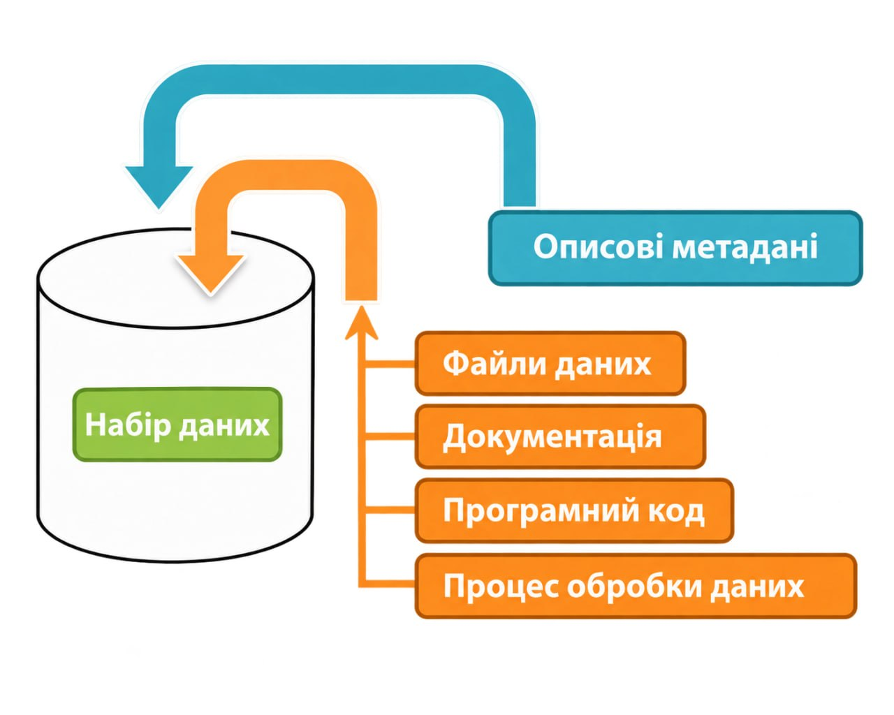
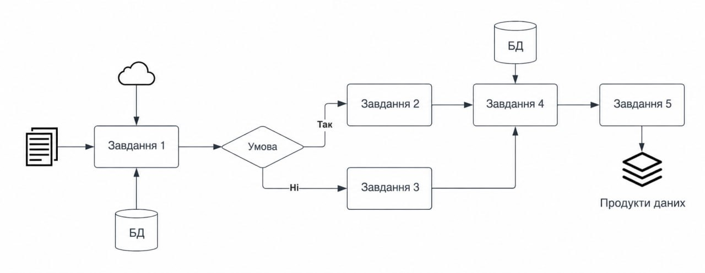
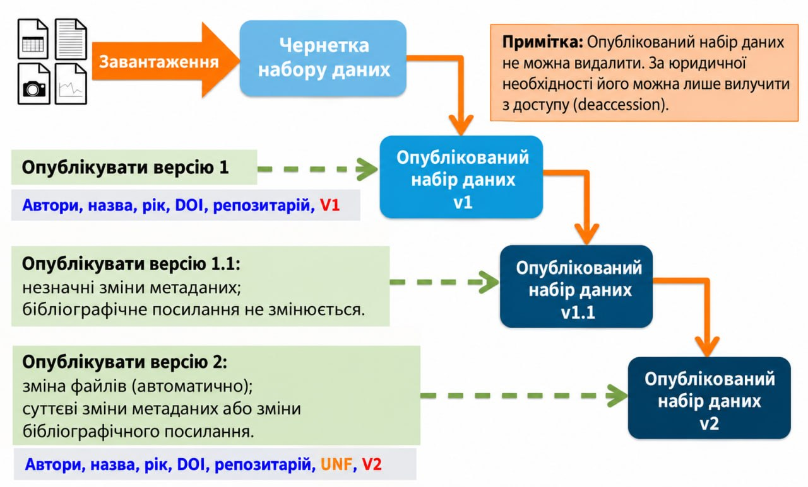

Управління наборами даних + файлами
Набір даних (dataset) в інсталяції Dataverse — це контейнер для ваших даних, документації, коду та метаданих, що описують цей набір даних.

- Підтримувані метадані
- Додавання нового набору даних
- Завантаження файлів (File Upload)
- HTTP завантаження
- Завантаження з Dropbox
- Завантаження папки
- Спеціальний завантажувач з командного рядка (DVUploader)
- Дублікати файлів
- Підтримка BagIt
- Обробка файлів (File Handling)
- Попередній перегляд файлів
- Табличні файли даних
- Дослідницький код
- Обчислювальний робочий процес (Computational Workflow)
- Астрономічні (FITS), Геопросторові та інші файли
- Файли з обмеженим доступом (Restricted Files)
- Редагування файлів
- Заміна файлів
- Умови (Terms)
- Ролі та дозволи
- Походження даних (Data Provenance)
- Мініатюри (Thumbnails) + Віджети
- Публікація набору даних
- Відправка на розгляд (Submit for Review)
- URL для попереднього перегляду неопублікованого набору даних
- Ембарго та Періоди зберігання (Retention Periods)
- Версії наборів даних
- Метрики наборів даних і Make Data Count
- Хмарне сховище + Обчислення (Cloud Storage + Computing)
- Деаксесія набору даних (Dataset Deaccession)
- Типи наборів даних
Підтримувані метадані
Набір даних містить три рівні метаданих:
- Метадані цитування (Citation Metadata): будь-які метадані, які будуть потрібні для генерації цитування даних, та інші загальні метадані, які можуть бути застосовані до будь-якого набору даних;
- Доменно-специфічні метадані (Domain Specific Metadata): з поточною підтримкою специфічних метаданих для соціальних наук, наук про життя, геопросторових та астрономічних наборів даних; і
- Метадані на рівні файлів (File-level Metadata): варіюються залежно від типу файлу даних.
Підтримувані формати експорту метаданих
Після публікації набору даних його метадані можна експортувати в різні інші стандарти та формати метаданих, що допомагає зробити набори даних більш доступними для пошуку та використання в інших системах, таких як інші сховища даних. На кожній сторінці метаданих набору даних доступні наступні формати експорту:
- Dublin Core
- DDI (Data Documentation Initiative Codebook 2.5)
- DDI HTML Codebook (Більш читабельна HTML-версія експорту метаданих DDI Codebook 2.5)
- DataCite 4
- JSON (власний формат програмного забезпечення Dataverse)
- OAI_ORE
- OpenAIRE
- Schema.org JSON-LD
Додаткові формати можуть бути увімкнені адміністратором (наприклад: Croissant, RO-Crate). Кожен з цих експортів метаданих містить метадані останньої опублікованої версії набору даних.
Додавання нового набору даних
- Перейдіть до колекції Dataverse, в яку ви хочете додати набір даних.
- Натисніть кнопку "Add Data" (Додати дані) і в спадному меню виберіть "New Dataset" (Новий набір даних). Примітка: Якщо ви знаходитесь у кореневій колекції Dataverse, створений набір даних буде розміщено в кореневій колекції (ви також можете вибрати іншу хост-колекцію на етапі створення, але цю опцію не можна буде змінити після створення).
- Щоб швидко розпочати, заповніть принаймні всі обов'язкові поля з зірочкою (Назва набору даних, Ім'я автора, Текст опису, Email контактної особи та Тема), щоб отримати цитування даних з DOI.
- Прокрутіть униз до розділу "Files" (Файли) і натисніть "Select Files to Add" (Вибрати файли для додавання), щоб додати всі відповідні файли до вашого набору даних. Ви можете перетягувати файли (drag and drop) або завантажувати їх з Dropbox. Тут ви також можете додавати описи і теги, і для кожного файлу буде додана MD5-контрольна сума.
- Після завершення натисніть кнопку "Save Dataset" (Зберегти набір даних). Ваш неопублікований набір даних тепер створено.
Примітка: Ви можете додати додаткові метадані після створення, натиснувши кнопку "Edit" і вибравши "Metadata".
Підтримувані HTML-поля
Ми підтримуємо такі HTML-теги для будь-яких наших текстових полів метаданих (тобто Опис): <a>, <b>, <blockquote>, <br>, <code>, <del>, <dd>, <dl>, <dt>, <em>, <hr>, <h1>-<h3>, <i>, <img>, <kbd>, <li>, <ol>, <p>, <pre>, <s>, <sup>, <sub>, <strong>, <strike>, <u>, <ul>.
Завантаження файлів (File Upload)
Програмне забезпечення Dataverse пропонує кілька методів завантаження файлів до набору даних. Ці методи налаштовуються адміністратором. Набір даних може використовувати лише один метод завантаження.
HTTP завантаження
Це звичайний інструмент для завантаження на основі браузера. Ви можете завантажувати файли по HTTP, вибравши їх за допомогою браузера або перетягнувши їх у віджет завантаження.
Завантаження з Dropbox
Деякі інсталяції Dataverse підтримують можливість завантажувати файли безпосередньо з Dropbox. Натисніть кнопку "Upload from Dropbox" (Завантажити з Dropbox), увійдіть у систему в спливаючому вікні та виберіть файли.
Завантаження папки
Можливість завантажувати папки з підпапками. Натисніть "Upload from Folder", виберіть папку і почніть завантаження. (Потребує увімкненого DVWebloader).
Спеціальний завантажувач з командного рядка (DVUploader)
Використовується для завантаження величезної кількості файлів, які незручно завантажувати через браузер. Працює як програма на Java.
Дублікати файлів
Починаючи з Dataverse 5.0, обробка дублікатів була покращена: файли з тією самою контрольною сумою можна включати в набір даних (навіть в одному каталозі), файл з однаковим ім'ям буде перейменовано додаванням "-1" або "-2", якщо він уже є в каталозі.
Підтримка BagIt
Якщо включено BagIt, під час завантаження система буде перевіряти файли-маніфести з контрольними сумами. Якщо виникнуть помилки перевірки маніфесту BagIt, вони будуть відображені в інтерфейсі завантаження файлу:

Обробка файлів (File Handling)
Попередній перегляд файлів
Інсталяції Dataverse можуть додавати програми попереднього перегляду (previewers) для поширених типів файлів (Text, PDF, Markdown, Tabular, Code R, Images, MP3, MP4, Zip, HTML, GeoJSON та багато іншого). Вони з’являються на сторінці файлу після того, як користувач погоджується з умовами використання файлу.
Табличні файли даних
Файли Stata, SPSS, R, Excel (xlsx), CSV і TSV можуть бути оброблені як табличні дані. Вони можуть бути завантажені у вигляді оригінального файлу, у форматі з розділеними табуляцією значеннями, у форматі R, як метадані змінних DDI, або цитування файлу (RIS, BibTeX і т.д.).
Дослідницький код
Файли коду (Stata, R, MATLAB, Python) часто супроводжують дані. Бажано мати файл README, використовувати відносні шляхи файлів і зберігати середовище і залежності (conda env export, requirements.txt, install.R, або Dockerfile).
Обчислювальний робочий процес (Computational Workflow)
Обчислювальні робочі процеси описують багатоетапний процес для координації кількох завдань. Для їх створення використовують Common Workflow Language (CWL), Snakemake, Jupyter Notebook, MATLAB Script тощо.

Їх можна позначати тегами "Workflow" для кращого пошуку.


Ви також можете описати свої обчислювальні робочі процеси у метаданих:

А потім шукати їх серед фасетів:


Астрономічні (FITS), Геопросторові та інші файли
- FITS (Flexible Image Transport System): метадані витягуються автоматично.
- GeoJSON, GeoTIFF, Shapefile мають карти попереднього перегляду, де вказуються обмеження за розміром файлу.
- NetCDF та HDF5: Можна візуалізувати через попередній переглядач H5Web, а також з них витягується геопросторовий
Bounding Box (широта і довгота).

- Стиснуті файли (.zip): Автоматично розпаковуються. Якщо структура каталогів включена, вона буде дотримана (File Path). Максимально 1000 файлів.
Файли з обмеженим доступом (Restricted Files)
Коли ви обмежуєте доступ до файлу, його неможливо завантажити без дозволу. Користувачам може бути надана можливість запитувати доступ, і ви, як власник, повинні будете цей запит схвалити.
Редагування файлів
Редагувати метадані файлів
Перейдіть до редагування набору даних, виберіть "Files". Виділіть файли, і натисніть "Edit Files", де можна видаляти, редагувати ім'я і опис, обмежувати (або знімати обмеження) файли, і додавати теги.
Шлях до файлу (File Path)
Поле метаданих File Path відображає розташування файлу в ієрархії. Коли завантажується zip-архів з папками, він автоматично заповнює це поле. Якщо файлів багато, для них з'явиться можливість відображатися як деревоподібна структура:

Заміна файлів
Ви можете оновити існуючий файл, скориставшись функцією Replace File (Замінити файл). Вона зберігає історію версій. Заміна файлу можлива тільки після публікації попередньої версії файлу.
Умови (Terms)
Умови використання набору даних можна переглянути та відредагувати на вкладці Terms (Умови) на сторінці набору даних. Ви можете встановити умови доступу, вибрати стандартну ліцензію (наприклад, Creative Commons CC0), або ввести спеціальні власні умови використання.
Створення диференційно приватних метаданих DP (Експериментально)
Ви можете створювати диференційно приватні (Differentially Private) метадані за допомогою модуля OpenDP Tool. Це дає змогу дослідникам бачити статистику по обмежених табличних файлах.
Гостьова книга (Guestbook)
Ви можете увімкнути гостьову книгу для фіксування завантажень користувачами (і збирати від них дані як от їхню афіліацію).
Ролі та дозволи
Ви можете призначати ролі і користувачам (Users/Groups), керуючи їх рівнями доступу, на рівні набору даних і також на рівні конкретного файлу (File-level access restrictions).
Походження даних (Data Provenance)
На рівні набору даних
Ви можете додати "Version Note" (Примітку до версії), яка пояснюватиме користувачам, чому була створена нова версія набору даних, чим дані відрізняються від попередньої версії.
На рівні файлу
Ви можете додати файл походження (Provenance File) (наприклад, з RDataTracker, NoWorkFlow, або CamFlow) формату PROV (JSON) або текстовий опис "Provenance Description" для детального відстеження життя файлу.


Мініатюри (Thumbnails) + Віджети
Мініатюри
Зображення (JPEG, PNG, TIFF) з вашого набору будуть автоматично вибрані мініатюрою набору даних. Ви також можете змінити це вручну, або завантажити свою окрему мініатюру на вкладці "Thumbnails + Widgets".
Віджети
Віджет набору даних (Dataset Widget) та Віджет цитування (Citation Widget) дозволяють вам вбудувати ваш набір даних або інформацію щодо того, як його цитувати, на вашому персональному вебсайті за допомогою спеціального HTML коду.
Публікація набору даних
Коли ви публікуєте набір даних (кнопка "Publish"), він переходить з чернетки у публічний стан і назавжди стає видимим світові.
Відправка на розгляд (Submit for Review)
Якщо ви маєте функцію Contributor, після заповнення даних ви не можете публікувати самостійно, тому ви маєте відправити набір "Submit for review" кураторам (Curator / Admin) вашої колекції.
URL для попереднього перегляду неопублікованого набору даних
Щоб інші колеги могли проглянути ваші набори до публікації без реєстрації, ви можете створити для них General Preview URL (або Anonymous Preview URL, який приховуватиме імена авторів і дозволяє анонімне рецензування).
Ембарго та Періоди зберігання (Retention Periods)
- Ембарго (Embargoes): Дозволяють публікувати набір уже зараз, але заборонити можливість скачування до певної визначеної дати.
- Періоди зберігання (Retention Periods): Роблять файлы недоступними після певної дати (наприклад з юридичних міркувань, якщо за угодою дані можуть бути доступні лише кілька років).
Версії наборів даних
Кожна зміна після публікації створює нову версію, і ви матимете малу версію (1.1, 1.2, якщо мінялися лише метадані), і велику версію (2.0, 3.0, якщо замінювалися файли).

Деталі версій
Глядачі зможуть перевірити таблицю версій і використати кнопку "View Differences" аби легко знайти, які саме поля або файли були змінені або додані.
Метрики наборів даних і Make Data Count
Dataverse підраховує кількість завантажень файлів і цитувань використовуючи систему Make Data Count і збирає дані з Crossref.
Хмарне сховище + Обчислення (Cloud Storage + Computing)
Кнопка Compute (Обчислити) дозволяє вам швидко перейти до інструментів хмарних обчислень на базі Swift object storage, з якими може бути налаштований цей датаверс. А Cloud Storage Access надає вам гнучкий доступ до ідентифікатора контейнера.
Деаксесія набору даних (Dataset Deaccession)
Видалення опублікованого набору дуже не вітається. Але якщо з юридичних та інших причин набір все ж повинно бути видалено, він проходить процедуру Деаксесії. URL-адреса набору буде довічно продовжувати вести на "Tombstone" (надгробок) зі скромним повідомленням про те що набір був деаксесований і чому.
Типи наборів даних
Нові датаверси за замовчуванням мають тип "dataset", але суперкористувачі можуть додавати інші типи ("software", "workflow"), до яких застосовуються різні правила відправки метаданих і фільтрації.